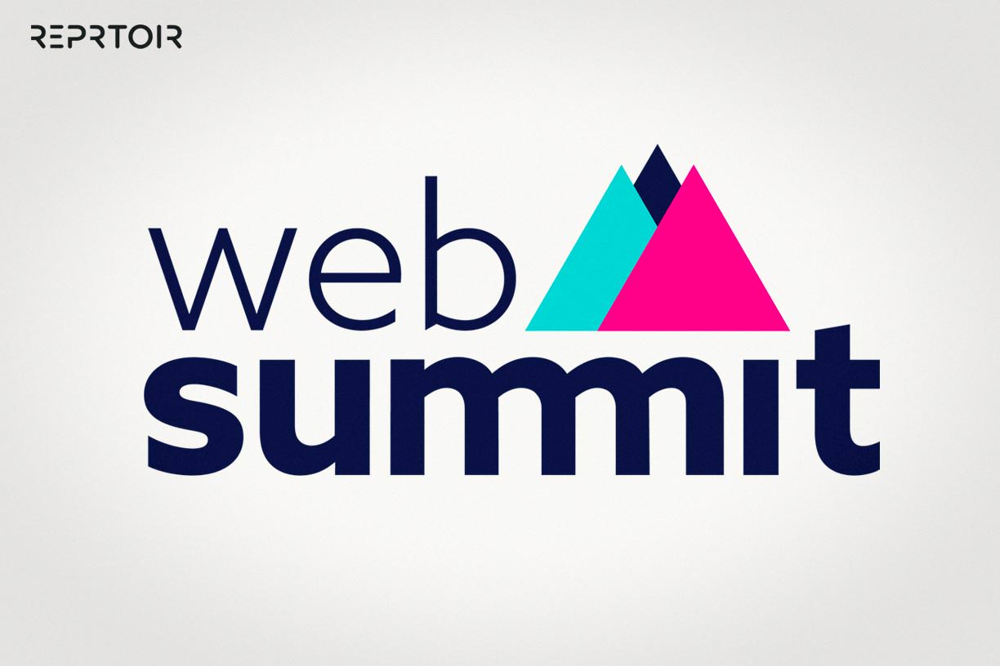

قمة ويب المستقبل 2026: آفاق التقنيات الصاعدة

مرحباً بكم في الحدث التقني الأبرز لهذا العام. نهدف في هذه القمة إلى استكشاف كيف يغير تطوير الويب & الذكاء
الاصطناعي وجه العالم الرقمي." (ملاحظة: تأكد من معالجة علامة & برمجياً).
خطوات التسجيل في المؤتمر
- إنشاء حساب شخصي عبر المنصة.
- اختيار المسار التقني المفضل (Frontend أو Backend).
- دفع رسوم التذكرة المبكرة.
- تحميل بطاقة الدخول بصيغة PDF.
ما الذي ستحصل عليه؟
- إنترنت مجاني فائق السرعة.
- وجبات غداء ومشروبات خفيفة.
- شهادة حضور معتمدة.
- فرصة للتواصل مع خبراء من Google و Mozilla.
قاموس المصطلحات التقنية للقمة
- Frontend
- كل ما يراه المستخدم ويتفاعل معه في المتصفح.
- Web Semantics
- استخدام عناصر HTML بناءً على معناها الوظيفي وليس شكلها.
- Accessibility
- ضمان وصول المواقع لجميع المستخدمين، بما في ذلك ذوو الاحتياجات الخاصة.
تنبيه: يرجى العلم أن التواجد في القاعة قبل البدء بـ 15 دقيقة أمر إلزامي. نحن حريصون
جداً على بدء
الورش في
مواعيدها
المحددة لضمان الفائدة للجميع.